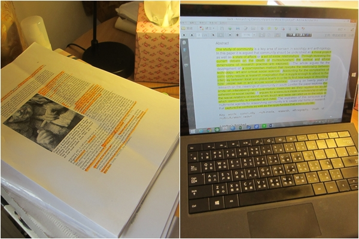

This blog is an experiment of presenting ethnography in a digital format.

Static Text
A traditional essay has a linear narrative, so it might be easier to follow. Clarity is emphasized, so details unrelated to the main argument are often discarded.
Digital Portfolio
A digital portfolio allows more breadth, more modes of expression, and frequent updates. However, it also has the propensity to be incoherent and overwhelming for the reader.
Finding the Balance between Breadth and Cohesion
While working on this practical project, the tension between breath and coherence had always been weighing on my mind. In the end, my choice was to include as much content as time permitted, but I sorted the posts into different categories on the sidebar of the blog. Hopefully the reader would know which aspect of the ethnography they are reading.
In addition to my preset categories, the reader can also read the posts in whatever way they want. The main page of the blog lists all posts in a chronological order, and each post is presented as a note card. As the reader click on a post, it would unfold and reveal the whole article. Ideally, they can skip the post not of interest.
I cannot measure the effectiveness of this experiment myself, but it is my hope that it could be of use to people interested in ethnography at home, reading practices, and the meaning of home.